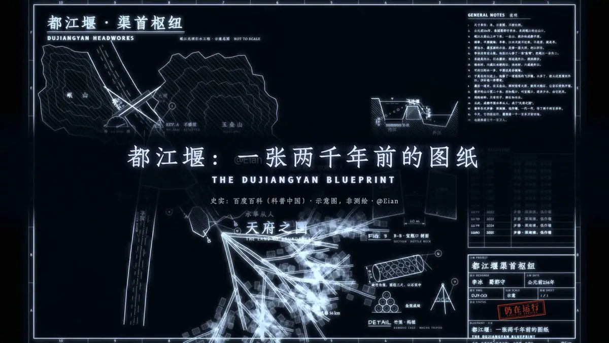
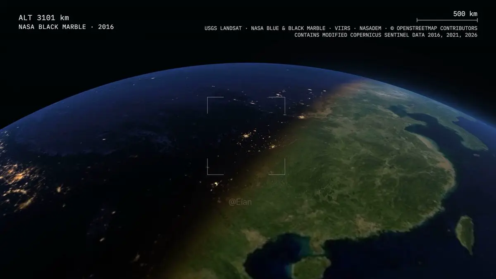

一句话：Eian 让 Claude（Opus 5.5）写代码逐帧渲染，不用任何视频生成模型，先后做出 149 秒的城市史《一座城的年轮》、工程蓝图风《都江堰》、36 年卫星影像《卫星年鉴·成都》，以及 20 秒的“孟菲斯微缩世界”三连（成都平原 / 玉林路 / 曲院风荷）。后者的提示词完整公开，评论区一天内出现了十几支跟做。本页最后的 Agent 复刻包 把这套做法整理成可以直接交给 agent 执行的任务书（AGENT.md）。
一、作品总览




六支片子的共同点：画面全部由代码生成（作者原话“画面全部由 Claude 写代码渲染完成”“视频由代码生成”）；主题都是“家乡”或地方；都有明确的数据或坐标锚点（城市建筑数据、卫星影像、经纬度字幕）。不同点在于工具链：《一座城的年轮》用了开源 skill lemo-opuscar，孟菲斯系列作者明确说是“直接提示词”，没有用 skill。
二、时间线（SGT，UTC+8）
只收作者本人的帖子与关键回复；“相邻测试”放在本节末尾。浏览数为 2026-10-28 读取时的 X 展示数。
| 时间 | 内容 |
|---|---|
| 10-18 09:00 | 预告 · 原帖用Opus 5.5做了一支视频，看完震惊到失语了。 |
| 10-18 11:35 | 《一座城的年轮》发布 · 1920×1080，约 149 s · 约 15.1 万浏览 · 原帖 · 全文见 镜像页《一座城的年轮》谨以此片，献给我的家乡。 |
| 10-18 19:31 | 成本 · 原帖一个有意思的事情是，我把这个视频发到了国内社媒上， |
| 10-19 10:31 | 工具：Opus 5.5 + lemo-opuscar · 约 10.1 万浏览 · 原帖谁懂现在 AI 视频的商单需求有多恐怖？ |
| 10-19 21:58 | 配音 · 原帖想给视频做配音可以试试豆包语音模型2.0，豆包干活虽然不靠谱，但是配音还行。（10-23 00:46 / 00:48 在年轮帖下两次回复确认：配音用的是豆包语音大模型 2.0 —— 回复 · 回复） |
| 10-20 13:15 | 《都江堰：一张两千年前的图纸》· 约 105 s · 原帖理工科对于这种工程蓝图风格的视频毫无抵抗力！ |
| 10-20 21:28 | “好视频不是一句话生成的” · 原帖这个视频超10万+播放了，从当前的情况下来看（抖音、小红书、X都有出对应的AI视频激励计划）用AI做视频绝对是风口来的，X上每天都有很多人分享用几条视频在抖音涨粉几万、几十万粉的神话，得益于Opus 5.5在视频方面的能力，现在做视频门槛降低了很多，但后面一定会从能做出视频往能做出好视频转移，随着“一句话”生成的视频越来越多、很快就会省美疲劳，但是好视频绝对不是能“一句话生成”的，如何做出没有AI味的视频，值得研究。 |
| 10-21 13:08 | 致谢 + 预告文章 · 原帖这支视频被卡神@Khazix0918 在公众号推荐了，太感谢了，同时也非常感谢Miles @miles_mazy 木哥@ai_xiaomu 蜗牛哥@isnail Punk @AdrianPunk115 还有非常多的朋友对这支视频的推荐转发，让我也体验了把小火的感觉哈哈哈哈，老激动了！同时再次向大家推荐一个神级Skill，由lemomo @lemomo_ai 创作的Skill：lemo-opuscar，目前已经有4000+ Star🌟 |
| 10-25 02:00 | 英文版发布 The Rings of a City · 原帖The Rings of a City中文翻译：《一座城的年轮》。谨以此片献给我的家乡。3,573 帧、74 亿像素、319 平方公里、71,380 栋建筑，全部按 1:10,000 等比缩小，所有画面都由 Claude 编写的代码渲染。从公元前 1250 年到 2022 年，3,271 年的历史压进 149 秒。这就是我的家乡：中国成都。如果喜欢，请支持一下，谢谢！数据来源：CMAB（清华大学）；© OpenStreetMap 贡献者。 |
| 10-26 08:45 | 预告 · 原帖我的家乡系列新视频终于完成了！ |
| 10-26 09:45 | 《卫星年鉴·成都》· 约 150 s · 原帖：36 年 Landsat 影像串起成都的扩张；帖中列明数据来源 USGS Landsat 5/7/8/9（Path 129 / Row 039）、Sentinel-2、NASADEM、OpenStreetMap、NASA Black Marble / VIIRS。 回 @ChrisHKAI（14:46）： 主要来自于NASA的卫星云图，都是公开的，直接让AI找就行了勒！10-27 20:28 回答“成都多云怎么办” · 回复 哇哦，这是个很好的问题哈哈，首先成都地区确实多云，特别是冬天，我大概下了7个G的云图素材，但基本挑不出一张晴天的图，所以我换了一种思路，不挑单张改成合成，每年把前后一两年同一条轨道上拍到的所有影响都下载下来，先去掉雾非常重完全不能用的素材，剩下的在把有云的像素一个一个去掉，在逐像素合成。另外卫星自带的云量标签在成都都不太准，因为成都有很重的雾霾，所以我是单独给城区上空打分来筛选的，特别是八九十年代冬天几乎没有清楚的，所以1990年那一期是用1988年到1999年的三年的图拼出来。（“1988年到1999年的三年”照录原文，按上下文应指 1988–1990 年前后三年。） |
| 10-26 17:30 | 孟菲斯微缩 ①：成都平原 + 玉林路，两支 20 s 1080×1080 · 约 6.6 万浏览、380 收藏 · 原帖（本页起点）再一次被Claude的审美震惊了🤯做动画也很👍 |
| 10-26 17:34 – 23:23 | 回复区要点：回 @lemomo_ai“申请加入风格库🤔”（17:34）；回“配音也是代码生成？”：“其实是可以的 不过没有自己找音乐好”（18:04）；回 @lemomo_ai“我会用这个风格搞个30-60秒小短片”（19:22）；回“还是俯视好”：“镜头都是可以调的，不一定非要俯视哇”（21:26）；回 @growaiskills“4 张样帧留开场和收尾”：“是的！”（22:24）；回“用 skills 还是直接 prompt”：“直接提示词”（23:23）。 |
| 10-26 20:29 | 孟菲斯微缩 ②：曲院风荷 + 完整提示词 · 原帖 · 提示词见 第三节这种风格真的太适合做一些治愈系动画了！ |
| 10-27 10:40 – 22:53 | 回 @theolearnsAI“是 opus 5.5 做的么”：“是的”（10:40）；回 @cfenghub“这种风格做城市插画真的好看”（10:46）；回求提示词者：“你可以看我相邻的2条帖子，有制作方法哦”（13:22）；回 @nextalphax：“我有发的哦 这条帖子的上面那一条”（16:56）。 |
| 10-27 22:11 | 出圈 · 原帖（引用提示词帖，附一张截图，本页不转载）这下真出圈了🥹跑印度尼西亚去了！感谢大家喜欢。 |
相邻测试（同期“用代码出片”，但不属于上面的系列）：10-24 09:20 为 Kimi 做的两版宣发视频（原帖；回复里说“反正交互很多轮 没有系统整理过提示词”“有claude辅助剪辑”）；10-24 12:15 让 Kimi K3.1 “用代码写个小鸭子走路的视频”（原帖；回复说提示词就是这一句）；10-27 13:20 用 GPT-6.1 Terra 做同一测试，34 秒出结果（原帖）。
三、提示词照录
3.1 孟菲斯微缩世界（Eian，10-26 20:29，原文）
用代码做一支 20 秒的"孟菲斯微缩世界"小动画，1080×1080，60fps。
画面：把一个场景做成会动的微缩模型。暖白底，内容放在居中的圆角画框里，四周多留白；画框边缘是颗粒状消散的边（像喷漆），开场从中心颗粒状长出来，结尾收回去。
配色：孟菲斯风格。饱和原色 + 粉彩（黄 #FFC93C、粉 #FF8DB5、钴蓝 #2E5BE6、珊瑚红 #FF5A5F、薄荷绿 #A9E6C6、天蓝 #8DD3F6、淡紫 #D3BEFF），所有物体有深靛色 #25214A 描边和不模糊的硬投影，大色块上铺圆点、条纹、折线这类小图案。
镜头：一镜到底，缓慢匀速移动，可以带一点旋转和推近。
节奏：靠画面里的小动静撑起来，比如鸟飞过、云影掠过、鱼游、人走、车开、叶子飘落，至少安排一两个有"剧情"的瞬间。
文字：画框下方三行居中小字：标题（中英）/ 季节 · 一句描述（中英）/ 随镜头变化的经纬度。
做法：用 Canvas 写一个确定性的 frame(i) 函数，输入帧号输出一张图，场景按坐标和固定随机种子生成；用无头 Chrome 逐帧导出，ffmpeg 合成。配乐也用代码合成：五声音阶的轻旋律 + 环境声，画面里的事件要和音效卡上。
先给我看 4 张样帧拼图，我确认后再渲全片。
场景：【在这里写你的场景】3.2 代码小鸭子测试（Eian，10-24，原文）
用代码写个小鸭子走路的视频《一座城的年轮》《都江堰》《卫星年鉴》都没有公开提示词；年轮片是 Opus 5.5 + lemo-opuscar skill 完成的，作者预告的制作拆解文章截至 10-28 尚未发布。
3.3 社区写的场景槽 / 变体（非 Eian 本人，供参考）
场景槽@huqinyiyayuguan 把 Eian 提示词的后半段原样保留，只填了场景（原帖，约 3.1 万浏览、834 收藏）。场景一栏原文：
场景：北京东三环中路，途经中央电视台总部大楼的路段。镜头沿道路缓慢前行，以行车视角掠过街景，让央视总部大楼标志性的倾斜双塔与悬挑结构逐渐进入画面，成为视觉中心。周围铺开 CBD 高楼、立交桥、车流、公交站和街边树木，用孟菲斯风格的几何色块重构城市细节，保留建筑轮廓与道路空间的辨识度。设定为初秋晴朗的午后：车辆有序穿行，行人在路口等候，云影缓缓扫过楼体。一辆明黄色公交车从镜头旁驶过，恰好露出后方完整的央视大楼；随后，一片落叶被车流卷起，短暂跟随镜头飘动，再落向路边。整体轻快、明亮，带着北京繁忙街头的日常感。换色板@star_flow_ai《一船烟雨过乌镇》：保留结构，把色板、描边、图案、镜头和配乐整套换成“新中式青绿水墨版画”（原帖）。说明这套提示词是一个可换参数的“风格框架”。原文：
《一船烟雨过乌镇》提示词：新中式青绿水墨版画风格。温润雅致的矿物色系（宣纸米白 #F4F0EA、石青 #2E5968、竹叶绿 #5D8268、朱砂红 #C84B31、黛青 #32383D、赭石 #B5835A、浅金 #D9B779），所有物体带有深墨色 #1F2224 的细微毛边描边与木刻版画质感的单向硬投影，大色块水面上铺细密的水波纹、岸石上铺皴法折线、屋瓦上铺鱼鳞阵列图案。 镜头：45度等轴俯视，一镜到底，顺着弯曲的水道缓慢平移并伴随轻微逆时针旋转与推近。 节奏：靠画面里的小动静撑起来，比如细雨斜织、水面的同心圆涟漪、锦鲤成群游过桥洞、乌篷船摇橹、岸边茶客举杯、柳枝随风轻摆，至少安排一两个有"剧情"的瞬间。 文字：画框下方三行居中小字：标题（中英）/ 季节 · 一句描述（中英）/ 随镜头变化的经纬度。 做法：用 Canvas 写一个确定性的 frame(i) 函数，输入帧号输出一张图，场景按坐标和固定随机种子生成；用无头 Chrome 逐帧导出，ffmpeg 合成。配乐也用代码合成：五声音阶的古琴泛音轻旋律 + 雨打芭蕉与摇橹环境声，画面里的事件要和音效卡上。 先给我看 4 张样帧拼图，我确认后再渲全片。 场景：浙江乌镇西栅老街水道交汇处。镜头沿狭窄的青石板河道缓慢推进，白墙黛瓦的临水民居、石拱桥与水阁逐渐展开成为视觉中心。设定为暮春微雨的清晨：水面泛着细碎的雨滴涟漪，一艘乌篷船正缓缓穿过石拱桥洞，船夫斗笠上的水珠滑落；桥上一位撑着朱砂红油纸伞的行人驻足低头看船，恰逢阵风吹过，伞面轻轻旋转，岸边树上一只白鹭受惊振翅飞越屋脊，带落几片桃花瓣掉进船头，惊起水底一尾红鲤跃出水面。整体清幽、灵动，充满江南水乡湿润的呼吸感。同期另一路@voidJan 的“移轴微缩·高铁穿城”长提示词（原帖，10-26 06:46）走的是另一条路：Blender / Three.js 真实透视与景深焦带、1920×1080 30 fps、−14 LUFS 响度、JSON 节拍表、子帧动态模糊、成片实测清单。Eian 在其下问“你这个微缩城市做的好好啊，用的claude嘛？”。它与孟菲斯提示词共享“确定性渲染 + 节拍表驱动音画”的骨架，但风格与技术路线不同，这里只给链接，不全文转录。
四、技术细节：作者明说 vs 本站推断
作者明说（来自原帖与回复）
- 模型：Opus 5.5（年轮帖、孟菲斯帖回复“是的”）；Claude 20 美元档，年轮片用掉周额度不到 20%，“成本可能1美元”。
- 年轮片：Opus 5.5 + 开源 skill lemo-opuscar；3,573 帧、1:10000；数据 CMAB + OSM。
- 孟菲斯系列：直接提示词，不用 skill。
- 管线：Canvas 写确定性
frame(i)，场景按坐标 + 固定随机种子生成；无头 Chrome 逐帧导出；ffmpeg 合成。 - 规格：20 s、1080×1080、60 fps；一镜到底、缓慢匀速、可带旋转和推近；镜头视角可调（不一定俯视）。
- 色板 7 色 +
#25214A描边与硬投影；大色块铺圆点 / 条纹 / 折线。 - 字幕三行：标题（中英）/ 季节 · 描述（中英）/ 随镜头变化的经纬度。
- 声音：代码合成五声音阶旋律 + 环境声，事件卡音效；但“没有自己找音乐好”。年轮片配音用豆包语音大模型 2.0（火山引擎 API Key 交给 Codex / Claude 调用）。
- 流程：先看 4 张样帧拼图再渲全片；认可样帧应包含开场与收尾。
- 卫星片：NASA/USGS 公开影像，让 AI 去找；约 7 GB 原始素材；同轨道 ±1–2 年逐像素去云合成；城区上空单独打雾霾分。
- 也可以做成网页动画、可交互。
本站推断（作者未说，复刻时补上）
- 时间用
t = i / fps，合成时 ffmpeg 用-framerate指定（评论区 @zealdin 的建议，作者未否认）。 - 种子 PRNG 只在构建场景时调用；
frame(i)不带帧间状态，才能跳帧导出样帧且与全片同号帧一致。 - 画框“颗粒边”= 一组固定种子的粒子，开场沿增长圆分布、稳定后沿画框分布。成片封面帧里边缘很宽、圆角很小，更像雾化噪点带。
- “硬投影”= 同一路径偏移数像素、用深靛色先填，再画本体；不用
shadowBlur。 - 画面事件与音效共用一份节拍表（cue sheet），避免手抄时间。
- 导出时用
canvas.toDataURL取 PNG，而不是截屏；1200 帧 PNG 需预留约 400 MB 临时盘。 - 暖白底色值、画框尺寸、线宽、投影偏移、字体：作者均未给，AGENT.md 里给的是可改的默认值。
五、社区复刻与问答
跟做作品（均为 10-26 至 10-27 SGT）
- @huqinyiyayuguan · 北京央视大楼行车视角（10-26 21:54）。全系列传播最广的一支跟做：约 3.1 万浏览、870 赞、834 收藏。场景槽见上。
- @lemomo_ai（lemo-opuscar 作者）· 二十四节气动画集锦（10-27 10:44）：“稍微修改一下配色体系……经过原作者同意，未来会收入到lemo-opuscar风格库中”。他总结了三种轮换视角：“剖面横移”“等距斜移”“俯视上移”。
- @369Serena · 上海武康路秋日，用 Claude，竖版 1080×1440、约 39 s（10-27 20:30）。
- @cfenghub · 杭州钱江新城（10-27 10:02）：“金叶落进薄荷绿灌木里，连江风都变甜了。”
- @leppppp1 · 元阳梯田，GPT-6.1 Sol in Codex（10-27 16:17）：“白鹭飞过水田，青蛙跳进池塘，涟漪还会接着散开……连水声和鸟鸣也是代码生成的”。说明这套提示词换了模型也能跑。
- @star_flow_ai · 《孟菲斯央视大楼》《一船烟雨过乌镇》（10-27 22:18），后者换成水墨色板，见上。
- @YuLin807 · 家乡梯田（10-27 22:21），交给个人 agent 执行，agent 回复“先出 4 张样帧给你看”，正好执行了提示词里的样帧关卡。
- @jesseqin_ · 小学放学回家的路；@leecooper616 · 《稻田》《外滩》；@withoutEis · 世说新语“王戎识李”（约 60 s）；@tobycontinue（印尼语用户）；另有 @untrave、@jiangjiangling、@coolbat1999、@PooMoo85259（MV）等人跟做。
- 相关：@ianneo_ai 用纯代码批量画 100 个微缩世界，经验是“先用第一个做标杆”“外形差异提前定好”“让代码算一下每个模型占画面的实际面积”。适合把单支做成系列时参考。
问答与技巧
- 用 skill 还是直接提示词？作者：“直接提示词”。用的什么模型？作者：Opus 5.5（“是的”）。
- 只能俯视吗？作者：“镜头都是可以调的，不一定非要俯视哇”。
- 配乐也是代码生成的？作者：“其实是可以的 不过没有自己找音乐好”。
- @zealdin：帧里时间用
i/fps算、ffmpeg 合成时再指定-framerate，以后改时长和帧率不用重写。 - @growaiskills：4 张样帧里留一张开场、一张收尾，顺便检查颗粒进出场和字幕边距。作者回“是的！”。
- @lujunnanm23：“先看样帧”这一条应该加粗；@enmao_li：逐帧可控，不用反复抽卡。
- @yuzheng132323 问 60 fps、20 秒序列帧的文件体积和渲染时间大概多少（原帖），作者未回答。本站用 4 秒样片实测的量级见下一节。
- 有人问“提示词在哪”，作者答：“你可以看我相邻的2条帖子，有制作方法哦”。
六、Agent 复刻包
下载：AGENT.md（自包含任务书，直接丢给 Claude / Codex / 任意 coding agent）· 参考实现源码：frame.js · cues.js · index.html · export.mjs · music.mjs · package.json
AGENT.md 包含：作者原提示词；风格框架变量表（时长、尺寸、帧率、色板、描边、图案、镜头、视角、节拍、字幕、音乐、样帧关卡、场景槽，每项标注【作者】或【推断】）；文件结构；确定性 frame(i) 契约（7 条硬规则 + 绘制顺序）；可运行的无头 Chrome 导出脚本；零依赖代码配乐做法；ffmpeg 命令（样帧拼图、合成、ffprobe / 黑帧 / 响度检查、封面帧）；执行流程；QA 清单；作者三支成片的字幕写法；未知项。
复刻要点（摘要）
- 一份节拍表（
cues.js）：fps、时长、种子、字幕、事件时间。画面与声音都从它读取。 frame(i)是纯函数：t=i/fps；种子 PRNG 只在构图时调用；禁用Date、Math.random、rAF 和 CSS 动画。- 无头 Chrome：puppeteer-core + 系统 Chrome，逐帧
frame(i)后用toDataURL落盘 PNG；--only=出 4 张样帧，先拼 2×2 等人确认。 - 代码配乐：五声音阶拨弦 + 低通噪声水声 + 按节拍表放置的鸟叫、蛙鸣、落水声，包络跟随颗粒进出场。
- ffmpeg：
-framerate 60 -i frames/%05d.png -i audio.wav -c:v libx264 -pix_fmt yuv420p -c:a aac -shortest -movflags +faststart。 - QA：帧数和时长准确、无黑帧、无色板外颜色、投影统一且无模糊、事件与音效偏差不超过 1 帧、字幕不被颗粒边吃掉、同一帧两次导出 md5 一致。
本站验证样片（4 秒，非作者作品）

七、未知 / 未公开
- 作者的实际代码、对话轮数、迭代次数、渲染耗时：均未公开。孟菲斯系列的 Token 用量和费用未说明；年轮片说用了“周额度不到20%”。
- 60 fps、20 s 序列帧的体积和渲染时间：有人问过，作者未答。
- 孟菲斯成片里的配乐是不是就是代码生成的那一版，有无后期：未说明。
- “刷到一支稻田的俯视小动画”——启发作者的那支原作是谁做的：帖中未署名，本站没有找到。
- 暖白底色值、画框尺寸、颗粒数量、投影偏移、线宽、字体：均未给出。
- 作者预告的“拆解制作过程 + Claude 视频工作流”文章、用孟菲斯风格做的 30–60 秒短片、lemo-opuscar 风格库收录：截至 2026-10-28 SGT 均未见发布。
- 《都江堰》《卫星年鉴》的提示词与实现细节：未公开（卫星片只有数据来源与去云方法的回复）。
- 本页没有观看或下载任何视频，时长与尺寸来自 X API 的媒体元数据，画面描述来自封面帧。